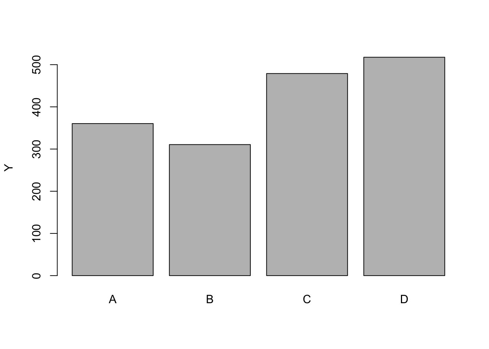

2 Welcome to the Tidyverse
The tidyverse is a collection of packages that were developed for data science. This group of packages provide some powerful and efficient functions that share a common syntax, making them seamless to use together. It is also possible (and common) to combine functions from the tidyverse with base R functions. The ‘tidy’ in the name comes from the concept of tidy data, which is basically a standardized way of managing data.
The tidyverse is a meta-package; the package itself does not contain any functions, but when you install or load tidyverse into your workspace, it ensures that the full group of packages are installed or loaded. The tidyverse includes three packages that we will use in this text (dplyr, tidyr, and ggplot2), plus several others.
2.1 The dplyr package
One of the most useful packages in the tidyverse is dplyr, and one of the most useful functions within the tidyverse is the pipe. Here, we will show how to use the pipe operator %>% to more efficiently do some of the same operations we showed in the previous chapter.
2.1.1 The dplyr pipe (%>%)
The concept of a pipe may be familiar to many programmers, but is often a new concept to scientists without a coding background. The simplest way to think about pipes is to say to yourself “and then…” any time you see the pipe. One of the most common usages of pipes is illustrated below. In the first line, we specify which data we want to work with, and then we perform operation 1, and then we perform operation 2.
To illustrate, we will create some pretend data to use with dplyr. The data frame will be named ‘df’, and will contain 20 rows and 4 columns. The glimpse() function from dplyr serves the same general purpose as str() when applied to data frames.
set.seed(20102)
df1 <- data.frame(fac = rep(c("A","B","C","D"), 5),
x = c(1:20),
y = round(rnorm(20, 10, 5)*(-9:10)^2),
z = round(rnorm(20, 100, 20)))
glimpse(df1) # similar to the `str()` function in base R## Rows: 20
## Columns: 4
## $ fac <chr> "A", "B", "C", "D", "A", "B", "C", "D", "A", "B", "C", "D", "A", …
## $ x <int> 1, 2, 3, 4, 5, 6, 7, 8, 9, 10, 11, 12, 13, 14, 15, 16, 17, 18, 19…
## $ y <dbl> 964, 625, 692, 309, 146, 174, 98, 63, 6, 0, 16, 49, 86, 208, 399,…
## $ z <dbl> 115, 110, 111, 92, 94, 107, 93, 95, 71, 100, 99, 75, 104, 92, 95,…2.1.2 group_by() and summarize() functions
One of the most useful things we can use dplyr for is to calculate descriptive statistics. For example, if we wanted to calculate the mean of y and z for the whole data set, we could use the summarize() function. This example takes the data frame ‘df’, and then uses the summarize() function to calculate the means of the columns named y and z.
## y.mean z.mean
## 1 416.9 95.7In this particular example, the pipe operator (%>%) isn’t all that helpful. We could have gotten the same result more efficiently using several different methods. One method, still using the summarize() function, removes the pipe and adds the data frame as the first argument to the function:
## y.mean z.mean
## 1 416.9 95.7But pipes become much more useful once we want to use multiple functions. To illustrate, we will combine two functions, the group_by() and summarize() functions, in order to calculate means for different groups. If we assume the ‘fac’ variable in the data is a treatment, and the y and z variables are responses to those treatments, then we will probably want to know the means for each treatment group. Using pipes, we can do that this way:
## # A tibble: 4 x 3
## fac y.mean z.mean
## <chr> <dbl> <dbl>
## 1 A 360. 92
## 2 B 311. 99.4
## 3 C 479 103.
## 4 D 518. 88.2This example starts with the data frame, and then groups the data by levels in the ‘fac’ column, and then summarizes the data by calculating the means. It will be common to use summarized data in tables and figures, so we can also store this summarized data for later use (as in, perhaps, a bar plot):
df1.means <- df1 %>%
group_by(fac) %>%
summarize(y.mean = mean(y),
z.mean = mean(z))
### Create a barplot of the means:
barplot(df1.means$y.mean, names.arg=df1.means$fac, ylab="Y")
2.1.3 The mutate() function
The mutate() function is used primarily when you want to create a new column. Common scenarios would include data transformations (such as log or square root), converting units (US customary units to SI units), or calculating a new variable for each observation from the measured data (calculating area from measured length and width). The syntax of mutate is similar to the summarize() function, but instead of reducing the data, it will keep the number of table rows the same while adding (or replacing) a column. For example, if we wanted to create a new variable that is the sum of y and z (named yz):
## fac x y z yz
## 1 A 1 964 115 1079
## 2 B 2 625 110 735
## 3 C 3 692 111 803
## 4 D 4 309 92 401
## 5 A 5 146 94 240
## 6 B 6 174 107 281Another powerful feature of dplyr is the ability to reference variables created earlier in the same function. For example, we can create the yz variableas before, and then perform a transformation on the new variable, like taking the square root all within the same mutate() function:
## fac x y z yz yz.sqrt
## 1 A 1 964 115 1079 32.84814
## 2 B 2 625 110 735 27.11088
## 3 C 3 692 111 803 28.33725
## 4 D 4 309 92 401 20.02498
## 5 A 5 146 94 240 15.49193
## 6 B 6 174 107 281 16.763052.1.4 filter() and select() functions
<<<<<<< HEAD
The filter() and select() functions are useful for subsetting or removing rows or columns from your data. The filter() function is used to keep or remove rows based on a specified criteria. For example, if we wanted to remove all rows with treatment ‘C’ from the data, we could do so by filtering to keep only rows where ‘fac’ is not equal to ‘C’. The operator for ‘not equal’ in R is != (see table of useful operators at the end of this chapter).
=======
The filter() and select() functions are useful for subsetting or removing rows or columns from your data. The filter() function is used to keep or remove rows based on a specified criteria. For example, if we wanted to remove all rows with treatment ‘C’ from the data, we could do so by filtering to keep only rows where ‘fac’ is not equal to ‘C’. The operator for ‘not equal’ in R is !=.
>>>>>>> 8e2378fe4699900a62ed1544c8f58ec178943c0c
## fac x y z
## 1 A 1 964 115
## 2 B 2 625 110
## 3 D 4 309 92
## 4 A 5 146 94
## 5 B 6 174 107
## 6 D 8 63 95
## 7 A 9 6 71
## 8 B 10 0 100
## 9 D 12 49 75
## 10 A 13 86 104
## 11 B 14 208 92
## 12 D 16 258 75
## 13 A 17 600 76
## 14 B 18 546 88
## 15 D 20 1909 104The behavior of filter() is to keep all rows that match whatever criteria we set in the function, so in the previous call, we keep all rows where fac does not equal “C”. We could also do the opposite, and keep only rows where the fac variable is equal to C. The operator for ‘equal to’ in R is ==.
## fac x y z
## 1 C 3 692 111
## 2 C 7 98 93
## 3 C 11 16 99
## 4 C 15 399 95
## 5 C 19 1190 118Numeric values can be filtered similarly; for example if we want to keep only rows where ‘x’ is less than or equal to 8:
## fac x y z
## 1 A 1 964 115
## 2 B 2 625 110
## 3 C 3 692 111
## 4 D 4 309 92
## 5 A 5 146 94
## 6 B 6 174 107
## 7 C 7 98 93
## 8 D 8 63 95And, like all things in dplyr, we can filter on multiple variables simultaneously. Perhaps for data quality checks, we want to look for all observations of treatment ‘C’ where ‘y’ is greater than 1,000. Note in this example, we use two equals signs ‘==’ as the logical operator for ‘equal to’, and we use the ampersand ‘&’ as the logical AND.
## fac x y z
## 1 C 19 1190 118The ‘OR’ operator in R is a vertical bar ‘|’. So if we wanted to filter rows to keep all observations that are greater than 1,000 OR less than 100, we could use the following filter arguments:
## fac x y z
## 1 C 7 98 93
## 2 D 8 63 95
## 3 A 9 6 71
## 4 B 10 0 100
## 5 C 11 16 99
## 6 D 12 49 75
## 7 A 13 86 104
## 8 C 19 1190 118
## 9 D 20 1909 104The select() function provides similar ability but for columns instead of rows. We can keep variables by including the column names in the select() function, and we can remove them by using a ‘-’ sign in front of the name (but typically using one or the other, not both). The following examples will result in the same three columns being retained, just fac, x, and y. In the first, we will explicitly include these three columns by naming them. In the second example, we will exclude the z column by using the minus sign.
## fac x y
## 1 A 1 964
## 2 B 2 625
## 3 C 3 692
## 4 D 4 309
## 5 A 5 146
## 6 B 6 174## fac x y
## 1 A 1 964
## 2 B 2 625
## 3 C 3 692
## 4 D 4 309
## 5 A 5 146
## 6 B 6 1742.2 The tidyr package
Another package contained in the tidyverse is tidyr. This package, as you might suspect form the name, relates to the tidy data format Wickham 2014. The two functions that we will use are called pivot_longer() which takes a ‘wide’ data set and reformats it to the long format, and pivot_wider() which takes a long data format and reformats it to a wider version. To begin, we’ll create some pretend data in the wide format:
set.seed(4070)
df.wide <- data.frame(
replicate = 1:6,
trt1 = round(rnorm(6, 10, 1),1),
trt2 = round(rnorm(6, 13, 1),1),
trt3 = round(rnorm(6, 4, 1),1))To see what the data looks like in wide format, we can print the df.wide data frame we just created:
## replicate trt1 trt2 trt3
## 1 1 11.2 13.9 4.8
## 2 2 8.5 13.9 3.8
## 3 3 8.4 13.1 3.7
## 4 4 8.9 12.9 5.1
## 5 5 10.7 13.5 3.0
## 6 6 11.1 14.3 4.3To convert this wide data into the long format that is typically preferred for statistical analysis, we can use the pivot_longer() function. For a simple data frame like this, there are four arguments we need to provide:
- the
dataargument, which tells R which data frame we’ll be starting with; - the
colsargument, which a list of columns we don’t want to gather from wide to long format; - the
names_toargument, which is what we want the column that contains the treatment information to be named; and - the
values_toargument, which is what we want to name the column that contains the data.
For this example, the data we are using is called ‘df.wide’. The columns we don’t want to include are any ‘housekeeping’ variables; in this case it is only one column, named ‘replicate’. We will store the treatment in a new column named ‘treatment’, and we will put the data into a new column named ‘weight’. So the pivot_longer() function would look like this:
df.long <- pivot_longer(data = df.wide,
cols = -replicate,
names_to = "treatment",
values_to = "weight")
df.long## # A tibble: 18 x 3
## replicate treatment weight
## <int> <chr> <dbl>
## 1 1 trt1 11.2
## 2 1 trt2 13.9
## 3 1 trt3 4.8
## 4 2 trt1 8.5
## 5 2 trt2 13.9
## 6 2 trt3 3.8
## 7 3 trt1 8.4
## 8 3 trt2 13.1
## 9 3 trt3 3.7
## 10 4 trt1 8.9
## 11 4 trt2 12.9
## 12 4 trt3 5.1
## 13 5 trt1 10.7
## 14 5 trt2 13.5
## 15 5 trt3 3
## 16 6 trt1 11.1
## 17 6 trt2 14.3
## 18 6 trt3 4.3We could also use the ‘pipes’ from dplyr as in the previous example to achieve the same result:
df.long <- df.wide %>%
pivot_longer(cols = -replicate,
names_to = "treatment",
values_to = "weight")In this example, there is no real benefit for using the pipes. However, if we wanted to do more operations on the same data, like filter or summarize the data, then the efficiency of pipes becomes substantial. For example, if we wanted to convert the weight from pounds to kilograms, and then summarize the data by treatment, we could use the following code:
df.wide %>%
pivot_longer(cols = -replicate,
names_to = "treatment",
values_to = "weight") %>%
mutate(weight.kg = weight * 0.4536) %>%
group_by(treatment) %>%
summarize(meanWeight.kg = mean(weight.kg))## # A tibble: 3 x 2
## treatment meanWeight.kg
## <chr> <dbl>
## 1 trt1 4.45
## 2 trt2 6.17
## 3 trt3 1.87It is also possible to use pipes with base R functions. One useful implementation of this is to mutate (or group or summarize) data as part of the input process. For example, we can read the data file in with read.csv, then pipe various other functions so that the data is in the correct format for analysis right from the start. For example, the following code will get the data, use the mutate() function to convert a blocking variable to a factor and transform a response variable with a log transformation, then pass that to the filter() function to remove one year of data (2009):
beanDat <- read.csv("http://rstats4ag.org/data/FlumiBeans.csv") %>%
mutate(block = factor(block),
logDensity = log(population.4wk)) %>%
filter(year != 2009)
glimpse(beanDat)## Rows: 56
## Columns: 5
## $ year <int> 2010, 2010, 2010, 2010, 2010, 2010, 2010, 2010, 2010, …
## $ treatment <chr> "Nontreated", "Nontreated", "Nontreated", "Nontreated"…
## $ block <fct> 1, 2, 3, 4, 1, 2, 3, 4, 1, 2, 3, 4, 1, 2, 3, 4, 1, 2, …
## $ population.4wk <int> 45302, 52272, 55757, 48787, 10454, 41818, 10454, 20909…
## $ logDensity <dbl> 10.721106, 10.864216, 10.928758, 10.795219, 9.254740, …Table of useful operators in the R language.
| operator | meaning |
|---|---|
| == | equal to |
| != | not equal to |
| > | greater than |
| >= | greater than or equal to |
| < | less than |
| <= | less than or equal to |
| & | and |
| | | or |